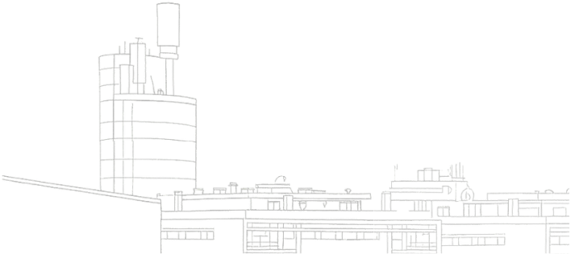

Perante a atual conjuntura, somos convocados a assumir responsabilidades e a contribuir de forma ativa e substantiva para um projeto maior de cidadania que responda às necessidades legítimas da comunidade e, consequentemente, melhore a vida das pessoas.
Apresento a minha candidatura à presidência do Partido Socialista da Maia, sob o lema «Acreditar - Uma Agenda Mobilizadora para a Maia», convicto de que num horizonte de longo prazo, seremos capazes de liderar um movimento social alargado, através de uma nova dinâmica estratégica de política autárquica, de uma nova geração de políticas públicas e de uma nova energia na participação política.
«Acreditar» estabelece um compromisso individual e coletivo de agir, recuperando o diálogo e a proximidade, mobilizando os militantes e a população da Maia.
Acredito que a Maia pode ser uma terra de oportunidades para todos, com políticas centradas nas pessoas, viradas para o futuro, capazes de unir gerações e de responder às suas necessidades.
Queremos construir uma alternativa credível, humanista, progressista, transformadora e mobilizadora, que recupere a confiança no Partido Socialista.
Conto consigo para, juntos, construirmos o caminho rumo a 2029.

Candidato a Presidente da Comissão Política Concelhia


Há candidaturas em que nos reconhecemos. Esta é, sem hesitação, uma dessas. Conheço o João Magalhães Torres há quase vinte anos. Acompanhei de perto o percurso de uma pessoa que combina, de forma rara, o conhecimento profundo da história e do legado do PS com a frescura e a visão de quem ainda tem muito para dar. Tem a idade certa, as raízes certas e a energia certa para liderar este projeto. Conhece esta Maia plural e heterogénea, está consciente dos seus desafios e tem uma estratégia construída com conhecimento, com raízes e com visão. Sei do que é capaz. Por isso estou aqui. Acreditar no João Magalhães Torres é acreditar na Maia.
Ana Leite
MANDATÁRIA DA CANDIDATURA À COMISSÃO POLÍTICA CONCELHIA

Verifique a nossa agenda
A definição de uma nova geração de políticas públicas só faz verdadeiramente sentido se for acompanhada por uma nova energia na participação. Só com o contributo e, sobretudo, o envolvimento das maiatas e dos maiatos é possível criar medidas que respondam aos seus problemas e melhorem as suas vidas. Convido-vos, por isso, a construírem esta agenda comigo, em conjunto, enviando os contributos que entenderem ser pertinentes. Mobilizar as ideias de todas e de todos é essencial para que muitos outros possam acreditar connosco.